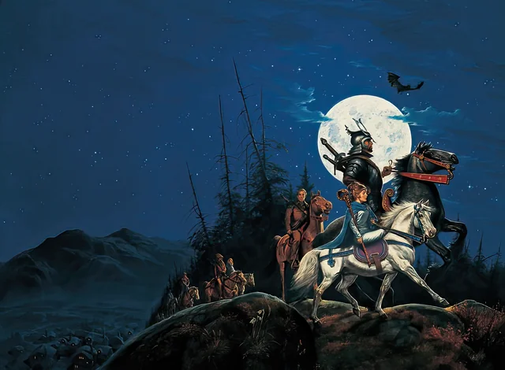
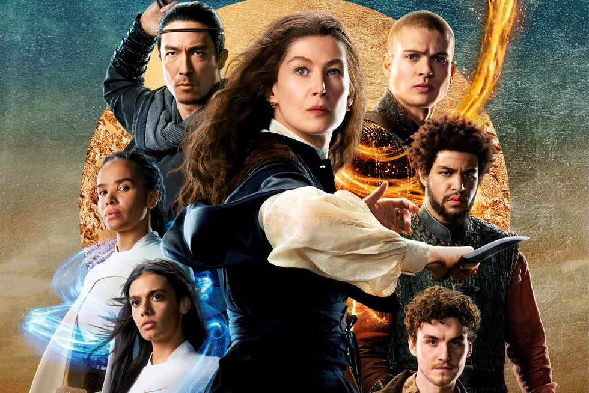

Good Books
About
Contact
Additional Links
Join

The Best Book
Series Ever!
The Wheel of Time is a Grand Epic Fantasy Series By
Robert Jordan and finished by Brandon Sanderson.
It spans
Fifteen Volumes and over Four Million Words, and tells
one of the greatest
stories ever told by humanity. From
the characters to the plot to the world building,
every element
shines throughout the series.
The Books
Begun in 1990 withe Eye of the World, The Wheel of time follows many
POV characters, with a major focus on six throughout the series. Of those major characters,
the true main character is Rand al’Thor, the prophesied Dragon Reborn, The one chosen to fight
the forces of the shadow at the legendary Last Battle. But victory is not guaranteed. The prophecies
must be fulfilled before the battle comes to pass or the forces of shadow will triumph over the land.
The heroes must navigate a Politically dense world determined to fight amongst itself as the world reaches
ever closer to ruin. On top of squabbling nations, the male half of magic is tainted, and the Powerful Magic
Institution is determined at all costs to prevent the damage that might occur. However this puts them at odds
with Rand, and threatens to tip the world to darkness. Read to find out!
The TV Show

The Wheel of Time TV show started in 2021 and has had
a mixed reception. Major criticisms have been leveled for its unwillingness
to follow and respect the source material, with many major plot points and
Characters skipped or handled incorrectly. Season 2 released in September
2023 and was met with a more jovial, if still mixed reception. The story
took steps closer to the source material and handled certain elements
and characters better than season 1. Season 3 is slated to release March 13th,
2025 and promotional material is showing a further increase in quality and
faithfulness to the books, even though rearrangements of major events are occurring.
Season four is not yet green lit pending viewership figures on season 3.